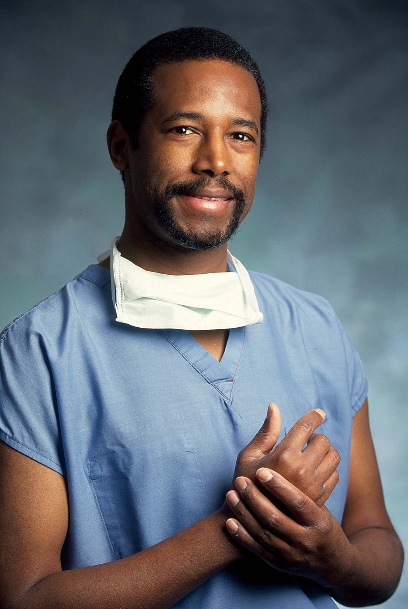
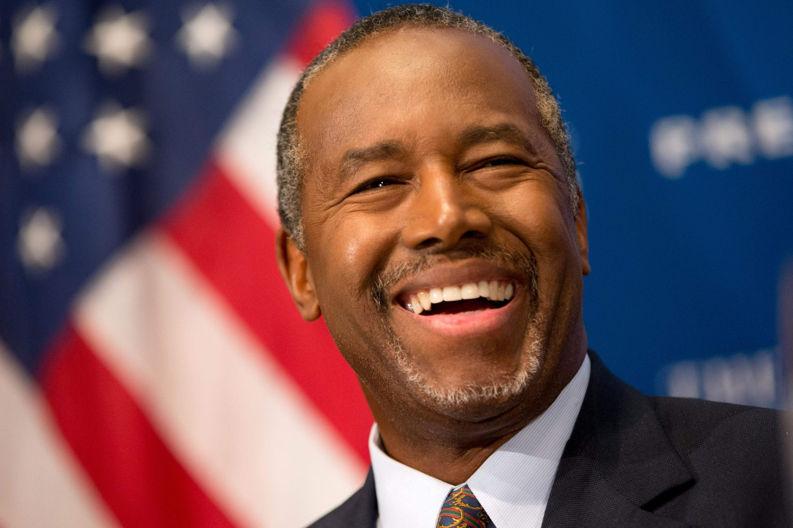

Dr.Ben Carson is a professor and the director of the pedriatic neuro-surgery at john hopkins medical institutions and the best
selling author ofThink Big & The Big Picture As a doctor, he became director of pediatric neurosurgery at Johns Hopkins Hospital at age 33 and earned fame for his ground breaking work separating conjoined twins. He retired from medicine in 2013, and two years later he entered politics, making a bid to become the Republican candidate for U.S. president. Carson dropped out of the race in March 2016 and became a vocal supporter of Republican nominee Donald Trump, eventually earning selection as President Trump's secretary of the Department of Housing and Urban Development.
WHO IS BEN-CARSON?
Benjamin Solomon Carson Sr. (born September 18, 1951) is an American politician, public servant,
author and retired neurosurgeon serving as the 17th United States Secretary of Housing and Urban Development since 2017.
Prior to his cabinet position under the Trump Administration, Carson was a candidate for President of the United States in the Republican primaries in 2016,
at times leading nationwide polls of Republicans.
Ben carson's potriat at john hopkins medical institute
Born in Detroit, Michigan, and a graduate of Yale University and the University of Michigan Medical School,
Carson has authored numerous books on his medical career and political stances. He was portrayed by Cuba Gooding Jr.
in a 2009 biographical television drama film.
Carson was the Director of Pediatric Neurosurgery at the Johns Hopkins Hospital from 1984 until his retirement in 2013.
As a pioneer in neurosurgery, Carson's achievements include performing the only successful separation of conjoined twins joined at the back of the head;
performing the first successful neurosurgical procedure on a fetus inside the womb; performing the first completely successful separation of type-2 vertical craniopagus twins; developing new methods to treat brain-stem tumors; and revitalizing hemispherectomy techniques for controlling seizures. The surgery on the conjioned Twins
He became the youngest chief of pediatric neurosurgery in the country at age 33. Carson has received more than 60 honorary doctorate degrees, numerous national merit citations, and written over 100 neurosurgical publications. In 2001, he was named by CNN and TIME magazine as one of the nation's 20 foremost physicians and scientists, and was selected by the Library of Congress as one of 89 "Living Legends" on its 200th anniversary.

In 2008, Carson was bestowed the Presidential Medal of Freedom, the highest civilian award in the United States.
In 2010, he was elected into the National Academy of Medicine.
He was Professor of Neurosurgery, Oncology, Plastic Surgery and Pediatrics at the Johns Hopkins University School of Medicine.
Carson was the featured speaker at the 1997 National Prayer Breakfast.
His widely publicized speech at the 2013 National Prayer Breakfast catapulted him to conservative fame for his views on social and political issues. On May 4, 2015, he announced he was running for the Republican nomination in the 2016 presidential election at a rally in his hometown of Detroit. In March 2016, following the Super Tuesday primaries, he suspended his campaign and announced he would be the new national chairman of My Faith Votes, a group that encourages Christians to exercise their civic duty to vote. He then endorsed the candidacy of Donald Trump.
Carson was confirmed by the United States Senate as the Secretary of Housing and Urban Development
in a 58–41 vote and was sworn in on March 2, 2017.
Birth and Family Background
Carson was born in Detroit, Michigan, on September 18, 1951, the second son of Sonya and Robert Solomon Carson.
His mother was raised in Tennessee in a very large family and dropped out of school in the third grade. With limited prospects in life, she married Baptist minister and factory worker Robert Carson when she was 13. The couple moved to Detroit and had two children.
Sonya eventually discovered her husband was a bigamist and had another secret family. After the couple divorced, Robert moved in with his other family, leaving Sonya and her children financially devastated.
Influential Mother
Carson was 8 and Curtis, his brother, was 10 when Sonya began to raise them as a single mother, reportedly moving to Boston to live with her sister for a time and eventually returning to Detroit. The family was very poor and, to make ends meet, Sonya sometimes toiled at two or three jobs simultaneously in order to provide for her boys.
As Carson later detailed in his autobiography, his mother was frugal with the family's finances, cleaning and patching clothes from the Goodwill in order to dress the boys. The family would also go to local farmers and offer to pick vegetables in exchange for a portion of the yield. Sonya would then can the produce for her boys' meals. Her actions, and the way she managed the family, proved to be a tremendous influence on Carson and Curtis.
Sonya also taught her boys that anything was possible. By his recollection many years later, Carson had thoughts of a career in medicine. For medical care, his family would have to wait for hours to be seen by one of the interns at hospitals in Boston or Detroit. Carson observed the hospital as doctors and nurses went about their routines, dreaming that one day they would be calling for a "Dr. Carson."
Power of Reading
Both Carson and his brother experienced difficulty in school. Carson fell to the bottom of his class and became the object of ridicule by his classmates. Determined to turn her sons around, Sonya limited their TV time to a few select programs and refused to let them go outside to play until they had finished their homework.
She required them to read two library books a week and give her written reports, even though with her poor education, she could barely read them. At first, Carson resented the strict regimen, but after several weeks, he began to find enjoyment in reading, discovering he could go anyplace, be anybody and do anything between the covers of a book.
Carson began to learn how to use his imagination and found it more enjoyable than watching television. This attraction to reading soon led to a strong desire to learn more. Carson read literature about all types of subjects, seeing himself as the central character of what he was reading, even if it was a technical book or an encyclopedia.
Within a year, Carson was amazing his teachers and classmates with his academic improvement. He was able to recall facts and examples from his books at home and relate them to what he was learning in school.
Still, there were challenges. After Carson received a certificate of achievement in the eighth grade for being at the top of his class, a teacher openly berated his fellow white students for letting a black boy get ahead of them academically.
At Southwestern High School in inner-city Detroit, Carson's science teachers recognized his intellectual abilities and mentored him further. Other educators helped him to stay focused when outside influences pulled him off course.
Anger Issues
Despite his academic successes, Carson had a raging temper that translated into violent behavior as a child. In his autobiography, he stated that he once tried to hit his mother with a hammer because she disagreed with his choice of clothes. (His mother had in fact said in a 1988 Detroit Free Press article that she was the one wielding the hammer, with her other son Curtis interve